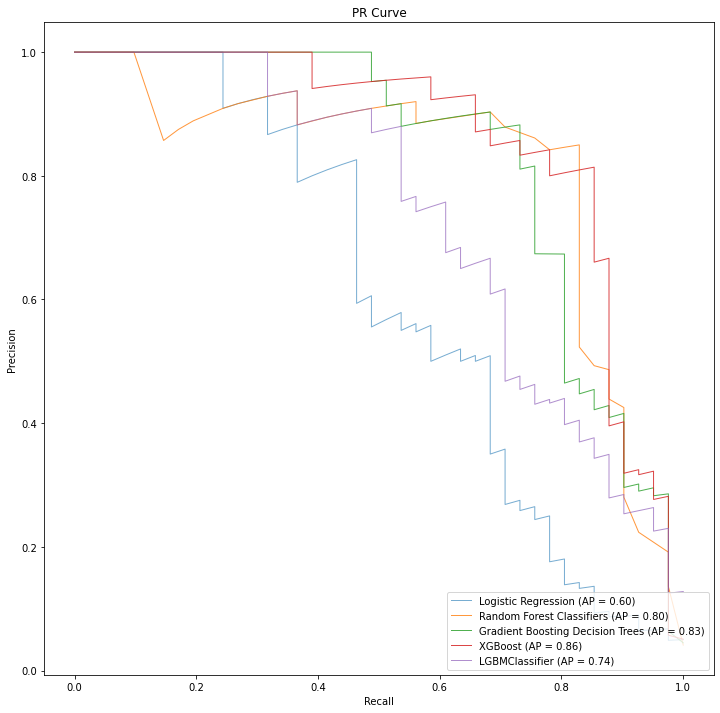
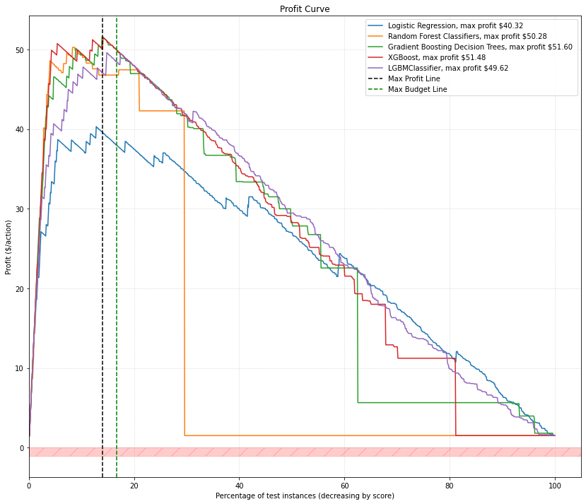

Forecasting the Business Value of a Model¶
In this chapter we look at how to frame and forecast the business value of a model. The concepts in this chapter are based on the concepts in the book “Data Science for Business” (Provost, Fawcett, O’Reilly 2013).
Introduction and Motivations¶
In this chapter we are focused on a workflow to evaluate the business value of a model, but also models that are trained on imbalanced data (the most common data in the wild). Choosing the right evaluation metric is key (for data science) and no single metric works for every problem.
Model performance is about balancing precision and recall in the context of a specific goal. However, finding the “correct” balance point in the precision and recall curve that is the most appropriate for the business problem can be a trick (Many times a data scientist will choose to use the best F1 score, which balances precision and recall).
If we’re doing pure (or arbitrary) data science with no line of business information, the modeling process can become a game of maximizing the AUC for a specific evaluation metric.
The trouble with evaluation metrics such as Accuracy, ROC Curves, and Precision Recall Curves is that they can be hard to communicate to the line of business. The business owners tend not to be able to grok these measures and can be confused or frustrated by the data science team’s results.
We close out the article measuring the value of the model performance with Expected Value and visualizing model performance with profit curves.
Let’s now do a quick review on how we choose an evaluation metric for a model and the implications involved.
Measuring the Goodness of a Model¶
Many data scientists start with an accuracy measure for their model, but we outline the issues with accuracy as a measure in imbalanced datasets.
The big issue with accuracy is that we can simply cheat and have our model predict the majority class every time. Given that most datasets in the wild are highly imbalanced, a majority classifier will get a high (many times +90%) accuracy rating and have no real predictive value for our minority class.
There are a lot of ways to evaluate the performance of a classifier beyond accuracy.
Some good ideas for general model evaluation are:
for relatively balanced datasets, use a ROC Curve
for imbalanced dataset modeling, use a precision-recall curve
Both of these plots are effective at understanding relative performance between mutliple models, as seen in the example precision-recall curve below.

This is helpful in our machine learning workflow as we train multiple types of models against our dataset and need to understand which models are getting the most effective performance for the problem at hand.
However, neither ROC Curves nor Precision Curves communicate business value (directly). We generally understand that “more effective models are more valuable”, but the business wants to know more specifics about expected return on investment.
Beyond general modeling, to communicate model business value you should consider:
Lift Curves
Profit Curves (discussed further in this chapter)
These graphs can communicate business value in a way that the line of business will recognize. We now will look at how to build a profit curve that incorporates business costs and benefits, and the y-axis values are based on the concept of expected value.
Forecasting Model Value with Expected Value¶
To build a profit curve to show classifier value across a range of usage, we need to compute expected value of the classifier.
To calculate expected value (or “Profit”) we take a confusion matrix and a cost-benefit matrix and compute the expected value. Expected value implies that if we use this model to predict actions for a new set of instances, then for the instances it predicts as positive we can expect to make (on average) the amount per prediction as computed from the expected value function.
We’ll use this expected value function as a key building block when we plot our profit curve. Let’s now work through how a cost-benefit matrix works.
The Cost-Benefit Matrix¶
A cost benefit matrix is a 2x2 matrix describing the costs and benefits of the business impacts of the values in a confusion matrix generated for a classifier.
We map costs (negative values) and benefits (positive values) to the following counts:
TP: saying the action will be true, and it is actually true
TN: saying the action will not occur, and the outcome does not occur
FP: saying the action will be true, and the outcome does actually occur
FN: saying the action will not be true, and the outcome actually does occur
In the table below we should the hypothetical scenario where a manufacturing company is making:
Outcome |
Cost |
Benefit |
Outcome Value |
|---|---|---|---|
TP |
60 |
2500 |
2440 |
TN |
0 |
0 |
0 |
FP |
60 |
0 |
-60 |
FN |
0 |
0 |
0 |
Rows that have a positive outcome value show how the outcome is a net benefit in the valuation of a model.
We can take these values and arrange them in the same fashion as a traditional confusion matrix:
| Actual | |||
| p | n | ||
| predicted | Y | $2440 | -$60 |
| N | $0 | $0 |
We define a cost-benefit matrix in Python simply as:
cost_benefit_matrix = np.array([[2440, -60],
[0, 0]])
Attention
Costs and Benefits
Note: mathematically there is no difference between a benefit and a cost in this context. The only difference is the sign of the outcome value. From this perspective, we can consider all outcome values as “benefits” where costs are considered “negative benefits”.
Given that we treat costs and benefits the same (just with different signs), this gives us a single function:
b( predicted, actual )
We’ll use this notation in a moment when we define the expected value function. Now let’s take the cost benefit matrix and use it in an expected profit calculation
Computing Expected Value¶
There are different versions of the expected value equation, but we focus on the version1 that accounts for the class priors (p(positive) and p(negative)):
expected_value =
p(p) * [ p(Y|p) * b(Y,p) + p(N|p) * b(N,p) ] +
p(n) * [ p(N|n) * b(N,n) + p(Y|n) * b(Y,n) ]
where the equation has 3 groups of components:
The class priors:
p(p): the likelihood of seeing a positive instance in the datasetp(n): the likelihood of seeing a negative instance in the dataset
Information from the Confusion Matrix:
p(Y|p): True Positive Ratep(N|p): False Negative Ratep(N|n): True Negative Ratep(Y|n): False Positive Rate
Information from the Cost-Benefit Matrix:
b(Y,p): True Positive Cost/Benefitb(N,p): False Negative Cost/Benefitb(N,n): True Negative Cost/Benefitb(Y,n): False Positive Cost/Benefit
To see expected value implemented in python, check out this open source implementation of the equation.
To quickly use the expected value formula in python, you can use our open source python package ml-valuation by installing it via pip:
pip install git+https://github.com/pattersonconsulting/ml_tools.git
From there you can import the package in python:
from ml_valuation import model_valuation
from ml_valuation import model_visualization
And then we’d use it with the method expected_value_calculation_with_class_priors(...) in our code (unit test example). A simple code snippet of it being used:
y_true = [0, 1, 0, 1]
y_pred = [1, 1, 1, 0]
scmtrx = model_valuation.standard_confusion_matrix(y_true, y_pred)
cost_benefit_matrix = np.array([[2440, -60],
[0, 0]])
exp_value = model_valuation.expected_value_calculation_with_class_priors(scmtrx, cost_benefit_matrix)
When we run this function we compute expected value for the combination of our business constraints and our current model’s performance on the test data. This expected value implies that if we use this model to predict actions for a new set of instances, then for the instances it predicts as positive we can expect to make (on average) the amount computed from this function.
Now let’s move on to how we can visualize expected value with profit curves in the context of machine learning models.
Visualizing Model Value with Profit Curves¶
Profit curves show us how expected value of the application of a classifier changes as we apply it to more data as ranked by the probability estimates of the classifier’s predictions, as we see in the example image below.

Attention
Why Rank Estimated Probabilities?
In some cases we may want to dial back how many positive predictions a classifier makes for business purposes (e.g., “less staff to handle positive predictions than normal”). If we’re going to process less positive instances, then we want the ones we work with to be the most certain predictions from the classifier.
In other cases we may want to see more positive predictions (e.g., in predictive maintenance we might want to find more machines that are possibly going to fail soon than we currently are analyzing). Again, we’d want a list of machines ranked by estimated probability to fail, and we’d just work farther down this list of machines than before. However, the model is going to be less “certain” about the prediction the farther we go down the list, so we run the risk of getting predictions that are incorrect.
A profit curve shows the expected average profit for each classifier as progressively larger proportions of the consumer base are targeted.
Each point on the a profit curve graph represents
x-axis: a percent of the total test records (corresponding to estimated probability thresholds)
y-axis: expected value based on the confusion matrix represented by a threshold cut-off on the rank-ordered set of test-record probabilities
Each estimated probability threshold on the x-axis represents a point in the list where we classify all instances above the threshold as positive and below as negative. Each threshold cut-off point creates a specific confusion matrix because it generates different counts for TP, TN, FP, FNs.
Attention
How is the confusion matrix created at each threshold?
The process is:
we sort all of the prediction by the model on the test set by their score (1.0 to 0.0)
we have a threshold (between 1.0 to 0.0), dropping it below the next prediction score in the prediction list at each step
For a given threshold, we create an array of predictions such that any prediction above the threshold is 1.0 and any prediction below the threshold is 0.0
we then compute a new confusion matrix from these predictions and their associated label values
Let’s start out by understanding how to get estimated probabilities from a machine learning model.
Using Probability Estimates Instead of Classification Labels¶
So we don’t want the traditional “hard” classifications (e.g., .predict()) from our model that we’d normally use. Here we want the estimated probability, which is typically executed with code similar to sklearn’s .predict_proba():
proba = model.predict_proba(x_test)
The scores output from this method are typically referred to as “probability estimates” (Provost and Fawcett use the term “scores”).
Attention
Tom Fawcett on “Using the Default Model Threshold”
It’s hard to say it better than Tom Fawcett about using the default (0.5) threshold:
Your classifier would be brain-damaged (the technical term) and could only provide the prediction labels that made sense when it was trained — not when it was used.
So we get the probability estimate (“score”) and throw away the default threshold label prediction.
Out of the box models assume a 50/50 (binary classification model) decision boundary. This built-in assumption is based on the idea that the class priors are all balanced. In practice, this is not true of most datasets, especially considering the abundance of imbalanced datasets in the wild.
Normally the model will use a default (0.5) threshold internally when we call (for sklearn, for example) the .predict() method. This is where in our workflow we want to change things up and just use the probability estimates as a tool to rank as opposed to classifying (just yet).
Using a threshold other than 0.5 is relevant to getting the best performance for our trained model as informed by our business context and cost-benefit matrix. However, how do we decide which custom threshold to use? We can determine the best threshold to use for our classifier through a process known as “threshold tuning”.
Threshold Tuning¶
In threshold tuning we take a classifier and a set of test instances and we get the probability estimates (for a positive prediction) for each test instance. We then rank the instances by their estimated probability, highest to lowest. From there we can apply a series of thresholds to classify all instances above the threshold as positive and below the threshold as negative. Each of these threshold produces a different confusion matrix that we can use to combine with the cost-benefit matrix to compute the expect value for that threshold. The threshold with the highest expected value will give the line of business the best outcome for the use of the classifier (combined with the given threshold value).
Attention
Threshold Tuning vs Model Training
Model training is the process of learning parameters to minimize the error in making predictions. With model training we are able to generate probability estimates about input instances. The default threshold in most classifiers is 0.5 that seperates a positive and negative prediction based on its probability estimate.
Threshold tuning is the process where we change the threshold for the classifier to make it more conservative or relaxed in how the classifier makes a positive prediction. We need the modeling phase to rank the test instances in order to perform the threshold tuning phase.
Attention
Did We Train Our Classifier “Enough”?
The idea of maximizing expected profit gives us a lot more to think about when training machine learning models.
When combined with a total project budget, a decently trained model, a cost-benefit matrix, and a high threshold may easily produce enough true positives to saturate our business capacity for processing the positive results and we just “don’t need more true positives”.
Quality training methods give us better ranking of the records, giving us a more effective projection of the value of the model. It definitely makes rendering a profit curve a key part of the complete modeling process as it can tell us to stop modeling sooner if we’ve hit our business goals already.
In most cases precision increases as recall decreases as we increase the threshold (with the opposite holding true as well). If the threshold is set to a high estimated probability, then the model will only predict a positive class if the predicted estimated probability is >= 0.9. A threshold this high tends to be more discriminatory in predicting a positive class.
Attention
How are the model and threshold used in practice?
We only take actions (such as perform preventative maintenance on a machine) if the model predicts failure (e.g., the “positive” or “minority class”).
In practice, if we had a 50/50 threshold, a model would predict a lot of positives with an estimated probability that isn’t that high (e.g., 0.6)
If we include our business cost-benefit information in how we set our threshold, we only predict positive under more confident predictions, cutting down on false positives — situations where we’d pay for “preventative maintenance” — but the machine was not going to fail. This is how the interplay of thresholding and business cost-benefit information help make a more effective classifier in practice.
Now let’s take these concepts and walk through how to build our profit curve.
Plotting the Profit Curve¶
To generate the profit curve we need to (for each classifier):
Train the classifiers (how well should they be trained? depends on how profitable we need to be under our budget constraints!)
Use the classifier to predict an estimated probability for each of the test instances
Rank the estimated probabilities (highest to lowest)
Compute confusion matricies for each threshold along the set of ranked test instances
Collect the busines information to build the cost-benefit matrix
Compute expected profit for each {threshold-confusion-matrix, cost-benefit-matrix} combination along the x-axis
Plot these x,y pairs on the graph
To do this with our python module, check out the unit test or the code snippet below:
model_data_tuples = []
X, y = make_classification(n_samples=100, n_features=8, n_redundant=0, n_clusters_per_class=1, weights=[0.85], flip_y=0, random_state=4)
# split into train/test sets
trainX, testX, trainy, testy = train_test_split(X, y, test_size=0.5, random_state=2, stratify=y)
# fit a model
model = LogisticRegression(solver='lbfgs')
model.fit(trainX, trainy)
# predict probabilities
yhat = model.predict_proba(testX)
yhat = yhat[:, 1]
model_data_tuples.append(tuple((testy, yhat, 'Logistic Regression')))
# baseline dummy model
clf_dummy = DummyClassifier(strategy='stratified')
clf_dummy.fit(trainX, trainy)
dummy_predicted = clf_dummy.predict_proba(testX)
dummy_predicted = dummy_predicted[:, 1]
model_data_tuples.append(tuple((testy, dummy_predicted, 'Dummy Classifier')))
# create a cost-benefit matrix
cost_benefit_matrix = np.array([[175, -150],
[0, 0]])
plt.figure(1)
fig, ax = plt.subplots(1,1,figsize = (10,10))
model_visualization.plot_profit_curves( cost_benefit_matrix, model_data_tuples, fig, ax, "profit_curve_multiple_models", total_budget=1500 )
Interpreting a Profit Curve Graph¶
So ideally we want to select the classifier that reaches the highest apex on the y-axis. In the graph above that would be the Gradient Boosting Decision tree model (max profit per customer: $51.60). This peak correspondes to a threshold which we need to use in practice with the model so that we will only predict positive instances above this threshold in practice. The threshold peak also corresponds to a cut point in the percentage of instances we predict as positive instances.
If we use this model and the associated threshold (and our production data population is roughly the same as our training/test class priors), our expected value calculation tells us (from our example image above) that we should expect to make around $51.60 per positive instance predicted.
What happens if we have a budget constraint?
our budget might not let us get to the max profit peak
and we might end up using a different { model, threshold } to maximize our expected value
It’s interesting how what we saw in our precision-recall curve a list of classifiers that excelled better or worse at different combinations of precision and recall. However, the profit curve puts a different “lens” on things and accounts for business constraints such as budget and cost-benefit matricies. However, we probably could not infer the same information from the precision-recall curve that we can quickly learn from the profit curve.
Profit curves are powerful tools to take into meetings with line of business owners and can help you more effectively communicate the value of machine learning in real dollars.
Further Reading and Other Resources¶
Check out “Data Science for Business” (Provost, Fawcett, O’Reilly 2013). We highly recommend this book.
Cost-based / cost-aware modeling and optimization
Expected Value
Lift Curves
References¶
Provost, F., & Fawcett, T. (2013). Data science for business: [what you need to know about data mining and data-analytic thinking]. Sebastopol, Calif.: O’Reilly.